Painting (42.84%)
The Search for Art in New Brunswick
The world is teeming with art at every waking moment, but the question is: are you looking hard enough to find it?
Evidently, there is art all around us, from the booming architecture found in industrial cities to Mother Nature's own delicate creations. At Creative Café, we want to emphasize art's universal disposition by sharing our favorite pieces in our city. Not only do we hope to shed light and acknowledgement to these often-forgotten pieces, but we also intend to help you open up your artist eye to what's possible.
Join us as we discover art (the good, the bad, and the unconventional) all throughout New Brunswick, NJ! These photos were taken over the course of just one week in the city; from my daily commutes to class, to grabbing food at the cafes, to just simply enjoying the weather, the art was beautiful and bountiful. If you're feeling awfully inspired by our gallery, be sure to share your own with the hashtag #Search4Art and tag us on Instagram @creative.café.nb!
Social Justice

Dreams of our Children
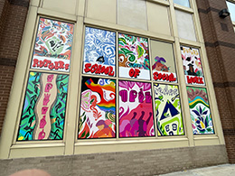
 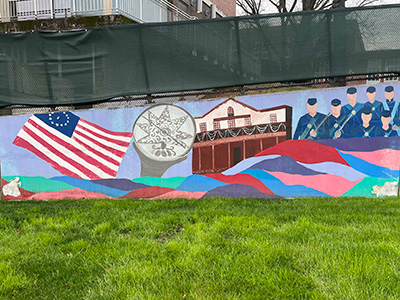
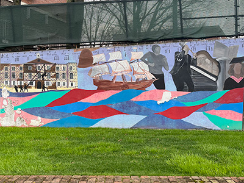
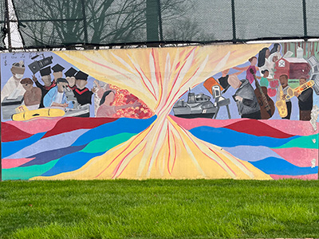
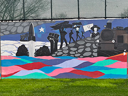
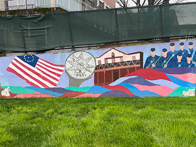
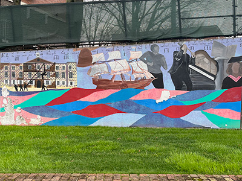
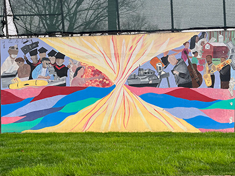
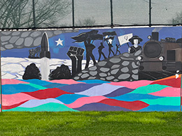

This section is dedicated to art with a deeper purpose in addition to its beauty. Coincidentally (or not), these are all murals, perhaps because the message is easier to spread when displayed to a wider audience. The first, referred to both as "The Dreams of Our Children" and "Una Gota Rompe La Piedra" (A Drop Breaks the Stone) is a mural located on the building at the intersection of Jersey Avenue and French Street in New Brunswick, NJ. In celebration of Oxacan Mexican culture, a population that is very prominent in New Brunswick, the mural features a vibrant depicition of a Latino family, complete with vivid colors and a hopeful message for the future of the community's children.
Next up is the mural representing the School of Social work, a piece spelling out "Toward a More Just Future" in both English and American Sign Language. The panels found all across the building send a message of love and acceptance through its image referencing empowerment for the LGBTQ+ community, women, the Black Lives Matter movement, and much more.
Finally, we have "Convergence Point," a mural created by Rutgers Mason Gross School of the Arts alum Ingrid Morales. This piece, located in Deiner Park (behind the river dorms) is a 100-foot wide mural depicting the university history and American history, meeting in the center to where they overlap. The art piece is meant to demonstrate how Rutgers University encourages and supports its students to become global leaders of the future.
More than Meets the Eye
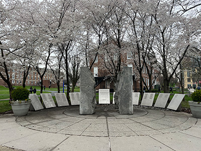
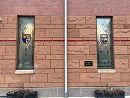
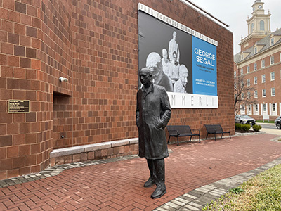
As we scuttle across campus with our heads held down, we tend to miss the art that is right in front of us. Perhaps it's the statue we ignore because we see it on a day to day or maybe some window panels we overlook because we refuse to look up for once. And yet, despite how often we neglect them, they hold such history and deep meaning.
For example, take "A World Turned Inside Out," a World War II Memorial honoring the 7,618 woman and men of Rutgers University that served. While some may see it as just some slabs of stone, this intricate plaza of sculpture and granite borders reveal a deep history of our university and celebrate the brave alumni who took part in it. During the spring, the surrounding cherry blossoms also send a message of the beauty in life and death, the idea that mortality is a gift to be used wisely.
Following this is the Class of 1957 Stained Glass Window featured on the South building of the Honors College. As a gift for the 60th year reunion of the aforementioned class, this piece symbolizes the combining of the university's history with its future. On the left lies the Rutgers Coat of Arms, established in 1966, juxtaposed with the right's new 2015 shield. Both are an incredibly important part of the university's (and city's) history, so to have them side by side shows the progression in a very elegant way.
Lastly is the "Walking Man" by New Jersey artist George Segal, located in front of the Zimmerli Art Museum. The bronze life-size figure represents an iconic age in the artist's career, as well as Segal's influence in the area. As a South Brunswick resident and alum of Rutgers University, it serves as a gentle reminder of our interconnectedness and what makes us human. The sculpture demonstrates the pause one experiences after a moment of reflect, regret, or maybe even indecision - and yet, they must continue forward.
All of these pieces in this section were found in just one afternoon walk, on the same campus. So, I challenge you this: next time you're walking to class, keep an eye out. Maybe you'll find unexpected treasure!
From Simon's POV
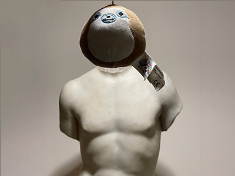
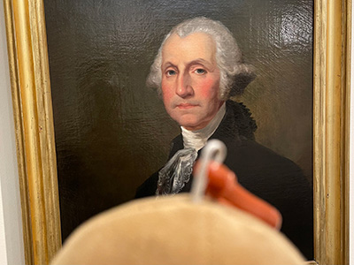
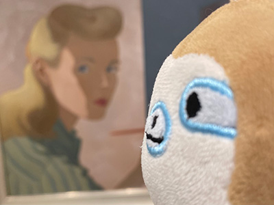
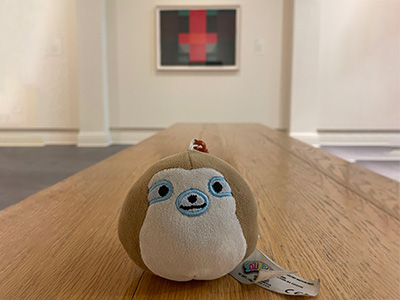
If you've headed on over to our About Page (which you should totally check out, by the way), then you will be familiar with our resident sloth, Simon! Last Wednesday, Simon decided to take a trip out to the Zimmerli Art Museum to discover the unique pieces on display (as well as model with some of them). If you have not checked out this museum and attend Rutgers, he highly recommends you do!
First up is Simon's favorite piece of the whole museum (because it excentuates his features): Male Torso, Eros. This is a sculpture with an unidentified sculptor, though they are believed to be Roman based on the the craftsmanship and style. Despite being carved out of marble, the artwork makes a point to replicate the softness of human skin and demonstrate the "ideal" male body at the time.
As Simon walked into the American Gallery, he stumbled upon the very first president himself: good 'ol George Washington! While there exist many paintings of the former president, this one was created by Jane Stuart as an homage to her father's work (Gilbert Stuart), which is displayed on the US Dollar Bill. Simon really enjoys the intricate details in this piece!
While still in the Art of the Americas, Simon discovered an artowrk titled "Self Portrait" by Helen Lundeberg. It features a blonde woman with paintbrush and sphere in front of a canvas, presumably painting the shadows and highlights of a landscape. Simon says that the woman in the painting almost looks reminiscent of a Disney princess, like Cinderella!
In an unfortunate turn of events, Simon took this final picture, but forgot what the art piece behind him was called (someone was a little too focused on how good they looked for the photo)! However, Simon recalls finding beauty in the simplicity of the geometric pattern juxtaposed with its bold colors.
Smaller-Scale Student Art
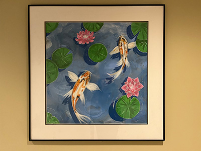
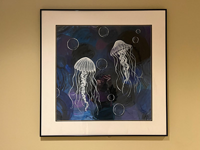
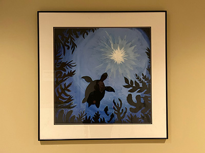
Finally, as we round off this week's art-in-the-wild finds, I wanted to take a moment to focus on student art (aside from the aforementioned murals). The members of Creative Café are fortunate enough to attend a college with so many talented individuals, and as such, it is only right that we highlight them, in hopes to spread the positivity and motivation!
One of my favorite pieces from this category is an untitled collage with "Table of Contents" prominently displayed overtop old book pages, candles, book covers, art pieces, and more. Whether the piece has a deeper meaning is up to viewer interpretation, but I personally just adore the overall vibe of the artwork and the summery feelings it evokes.
Following this is a triptych strung up in the halls of Hardenbergh Hall; in order, it features some koi fish, jellyfish, and finally a lone turtle. I really enjoy how the paintings almost feel like the viewer is progressively falling deeper and deeper into the water, only to turn around at the end to see how far they are from the light at the surface. Maybe it's a metaphor for life and how happiness is within reach, no matter how far it may seem, or maybe it is simply for aesthetic purposes. Whatever the case, it brings me joy each time I have to enter the dorm building.
While I unfortunately do not have the names of the artists who created these pieces, I hope to do some searching and find out! If you recognize these and/or know the person who made them, feel free to reach out to us over at @creative.cafe.nb on Instagram!
Distribution of Artistic Mediums
Mural (21.43%)
Sculpture (21.43%)
Stained Glass (7.14%)
Collage (7.14%)